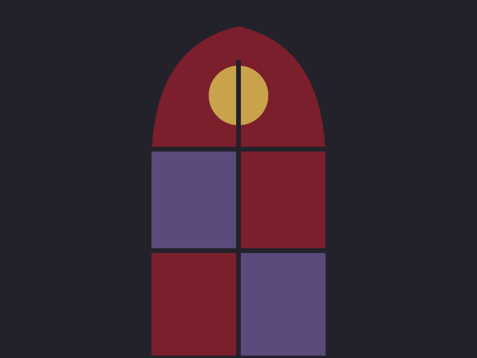
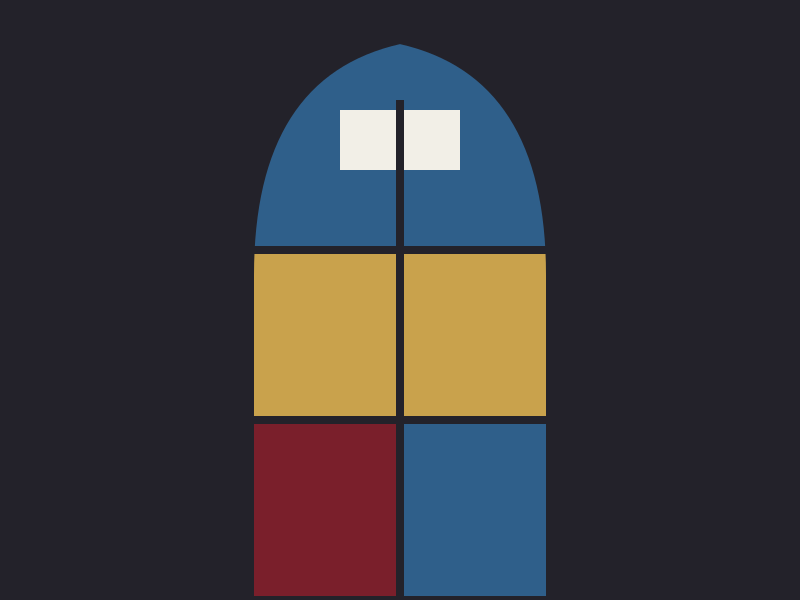
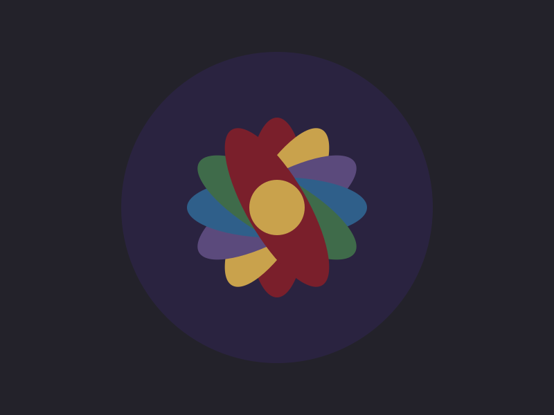
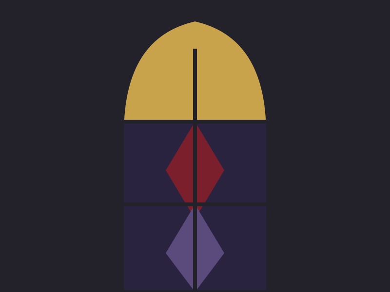

Component
Gallery and lightbox
A grid of thumbnails. Each opens a <dialog> lightbox on the matching slide; arrows move between slides; Esc or the close button dismisses it.
Preview

The Virgin 
Saint Aldric 
North rose 
Candlemas
<ul class="gallery">
<li><figure><a href="#lb-1" onclick="document.getElementById('lightbox').showModal()"><img src="../../assets/gallery-1.svg" alt="The Virgin window" width="800" height="600"></a><figcaption>The Virgin</figcaption></figure></li>
<li><figure><a href="#lb-2" onclick="document.getElementById('lightbox').showModal()"><img src="../../assets/gallery-2.svg" alt="Saint Aldric" width="800" height="600"></a><figcaption>Saint Aldric</figcaption></figure></li>
<li><figure><a href="#lb-3" onclick="document.getElementById('lightbox').showModal()"><img src="../../assets/gallery-3.svg" alt="The north rose" width="800" height="600"></a><figcaption>North rose</figcaption></figure></li>
<li><figure><a href="#lb-4" onclick="document.getElementById('lightbox').showModal()"><img src="../../assets/gallery-4.svg" alt="The Candlemas lancet" width="800" height="600"></a><figcaption>Candlemas</figcaption></figure></li>
</ul>
<dialog class="lightbox" id="lightbox" aria-label="Image viewer">
<figure class="lightbox-slide" id="lb-1"><img src="../../assets/gallery-1.svg" alt="The Virgin window"><figcaption>The Virgin window, 1 of 4</figcaption><nav class="lightbox-nav"><a href="#lb-4" aria-label="Previous">‹</a><a href="#lb-2" aria-label="Next">›</a></nav></figure>
<figure class="lightbox-slide" id="lb-2"><img src="../../assets/gallery-2.svg" alt="Saint Aldric"><figcaption>Saint Aldric, 2 of 4</figcaption><nav class="lightbox-nav"><a href="#lb-1" aria-label="Previous">‹</a><a href="#lb-3" aria-label="Next">›</a></nav></figure>
<figure class="lightbox-slide" id="lb-3"><img src="../../assets/gallery-3.svg" alt="The north rose"><figcaption>The north rose, 3 of 4</figcaption><nav class="lightbox-nav"><a href="#lb-2" aria-label="Previous">‹</a><a href="#lb-4" aria-label="Next">›</a></nav></figure>
<figure class="lightbox-slide" id="lb-4"><img src="../../assets/gallery-4.svg" alt="The Candlemas lancet"><figcaption>The Candlemas lancet, 4 of 4</figcaption><nav class="lightbox-nav"><a href="#lb-3" aria-label="Previous">‹</a><a href="#lb-1" aria-label="Next">›</a></nav></figure>
<form method="dialog"><button class="lightbox-close" type="submit" aria-label="Close">×</button></form>
</dialog>Classes
The rules live in css/global.css under /* == gallery == */.
| Class | Purpose |
|---|---|
.gallery | The list of thumbnails: an auto-filling grid |
.lightbox | The dialog; centred, rounded, most of the viewport |
.lightbox-slide | One figure per image; hidden unless targeted (the first shows when none is) |
.lightbox-nav | The previous and next links, floated to the sides |
.lightbox-close | The close button in the corner |
Notes
- The one line of script is the
onclickthat callsshowModal(); everything else is the URL fragment. A thumbnail is a link to#lb-3, so the browser marks that slide:targetand the stylesheet shows it. Prev and next are the same kind of link. - Because slides are fragments, the browser's back button steps back through the images you viewed. That is a feature until it is not; if you would rather it did not, replace the arrows with buttons and a few lines of script.
- Modal mode supplies the backdrop, focus trapping and Esc. The page behind stops scrolling while it is open.
- Give every slide and thumbnail the same alt text; the lightbox image is the thumbnail, larger.